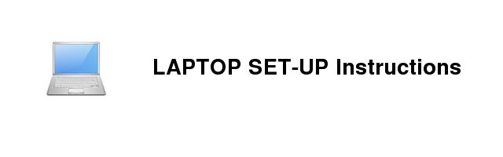
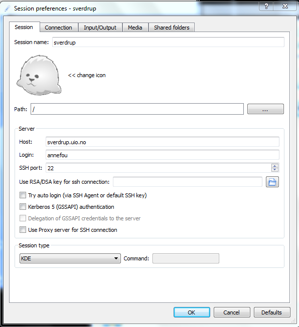

Check Remote Connection
To be able to connect to the High-performance Computing Machine where CAM-5.3 (Abel) will be run and on the norStore facility (cruncher, viz2) to post-process your model results, you need to be able to run Remote X11 applications.
From a Linux laptop
The tool on Linux for connecting to a remote system using SSH is called, unsurprisingly, ssh.
Launch a terminal from your desktop’s application menu and you will see the bash shell. There are other shells, but most Linux distributions use bash by default.

Then check you can login both on Abel (HPC computing facility) and Cruncher (norstore storage facility).
Please report any problems.
From a Mac laptop
If you haven't done it yet, install xcode:
- xcode can be installed by going to the App Store. You need to install xcode, then goto the top left of your screen and click XCode -> Preferences -> Downloads, find "command line tools" and click install.
- xcode is a 1GB+ download so you will not have time to download it in class Monday.
-
Note that the current version of xcode is only supported by OSX 10.7.4+ so we highly recommend you upgrade your operating system. If for whatever reason you absolutely cannot upgrade your os, you need to register for a free Apple developer account and download the appropriate version of xcode
Mac OS X has a built-in SSH client called Terminal which can be used to connect to remote servers. By default, Terminal.app is located in Applications -> Utilities folder. Double-click on the icon to start the client.
Then check you can login both on Abel (HPC computing facility) and Cruncher (norstore storage facility).
Please report any problems.
From a Windows laptop
Here we assume you wish to use your personal laptop (not UIO laptop) and have administrator privileges.
If you have a UIO laptop, all the necessary packages for running remote X11 applications are already installed and ready to use. Ask your administrator if you need help.
For running remote X11 applications from Windows the easiest is to install X2Go Client. You can download it here.
Once installed, double click on the X2Go shortcut on the desktop (see figure below)

A session preference window will pop up and you should fill it with the following information:
- Session name: sverdrup
- Host : sverdrup.uio.no
- Login : annefou (please use your own username!)

There are many "Session types" to choose from. We recommend a KDE session. Use your UIO password and open a connection on sverdrup.
Note: If you have a firewall installed on your computer you will need to allow remote hosts access to the X-server.
Please report any problems.
Then open a terminal and check you can login both on Abel (HPC computing facility) and Cruncher (norstore storage facility).
Login to Notur (Abel) and NorStore (cruncher, viz2)
In this section, you should check you can access both Abel (where you will run CAM-5) and Cruncher (where you will pos t-process and visualize the results of your model runs).
ssh -Y $LOGNAME@abel.uio.no
where $LOGNAME is your UIO username (replace it by your own username!)
More documentation on abel can be found here.
Post-processing will be performed on NorStore facility cruncher.norstore.uio.no:
ssh -Y $LOGNAME@cruncher.norstore.uio.no
where $LOGNAME is your UIO username (replace it by your own username!)
For visualization, you may use cruncher but the most suitable machine is called viz2. Check first that you have access to the machine:
ssh -Y $LOGNAME@viz2.norstore.uio.no
Report any problems, in particular if you don't have access to viz2.
Once you know you have access to viz2.norstore.uio.no, you will never login to this machine with ssh. We will give you scripts to make use of the GPUs and quickly visualize your data from your laptop or local machine.
To use viz2, you need to install turboVNC on your laptop (make sure you take the exact version we give so you can connect to the mahine):
- http://sourceforge.net/projects/turbovnc/files/2.0.1/
- Make sure your ssh keys are properly set-up (otherwise you will have to enter your password many times!)
Documentation on norStore facility can be found here.
Please note that these machines are not accessible outside the UIO networks. If you wish to login on abel or cruncher outside the UIO network, use
X2Go Client.
Check your SSH keys
To automate file transfers between norStore and Notur facilities with scp (Secure Copy), you need to be able to remotely copy files over SSH without entering your password.
Information on how to generate SSH keys and automate transfers can be found here.
Check Post-processing and Visualization Software
On norStore (cruncher.norstore.uio.no, viz2.norstore.uio.no), we will be using the following tools for post-processing and visualize the results of CAM-5 simulations:
These packages are already installed on cruncher and more information on how to use them is detailed in the Results section.
Setup for Remote Visualization (viz2)
Requirements
- Get access to viz2.norstore.uio.no (all GEF4530 students should have access to this machine)
- ssh. It is available on all machines at UIO. If you wish to use your laptop, make sure it installed (on Windows, install git bash)
- TurboVNC 2.0.1. It is available on all student machines in Room 209 and on all METOS student machines but if you wish to visualize your data from your laptop, install on your machine turbovnc 2.0.1 (http://sourceforge.net/projects/turbovnc/files/2.0.1/). Contact us if you need any help.
- SSH keys: make sure your public key (on your laptop) is known from viz2.norstore.uio.no.
SSH keys for viz2 (visualization)
To automate transfer between abel and norstore, you have set-up your SSH keys (see here).
To be able to visualize your data using the norStore remote visualization facility (viz2), your SSH public key (from your laptop/local desktop) needs to be available on viz2:
- Check your public key on your local desktop/laptop:
ls $HOME/.ssh
This command should return something like:
authorized_keys id_rsa id_rsa.pub known_hosts
If you have files called "id_rsa" and "id_rsa.pub" then skip step 2. Otherwise create new SSH keys:
- Create SSH keys:
ssh-keygen -t rsa -b 4096 -C "your_email@example.com"
Make sure you fill your email address correctly. For more information see here.
- Add your new SSH key to viz2.norstore.uio.no:
Install TurboVNC (visualization)
This step is required if you wish to visualize your data from your laptop (TurboVNC is already installed at UIO).
Connect to viz2
To make use of the remote visualization machine (viz2), you need to use TurboVNC (and you do not connect using ssh).
Clone GEF4530 repository (if you haven't done it yet). On your laptop terminal or machine desktop (use a git bash terminal on Windows):
git clone https://github.uio.no/annefou/GEF4530.git
The previous command (git clone) needs to be done once only. Then every time you wish to open a new terminal on viz2:
cd GEF4530/setup
git pull
./norstoreVizWin.sh viz2 0
or
cd GEF4530/setup
git pull
./norstoreVizWin.sh viz2 1
The last parameter (0 or 1) indicates which GPU to use on the viz2 machine.
Please note that on Linux system, it expects vncviewer (part of turboVNC) to be in /opt/TurboVNC/bin/. Edit the script if it is in a different location on your system (seek for help if you have problems).
The first time you launch norstoreVizWin.sh, you will be asked to define a password for TurboVNC. Choose a password you can remember as you will have to enter it for every remote visualization session.